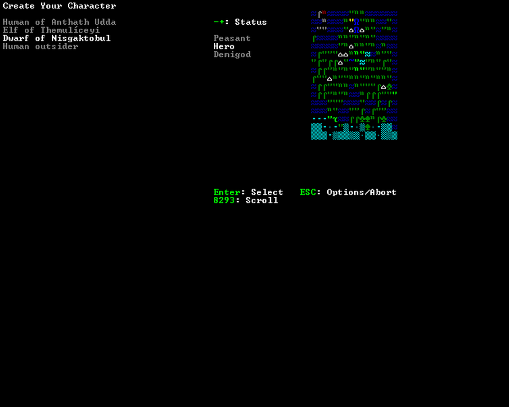
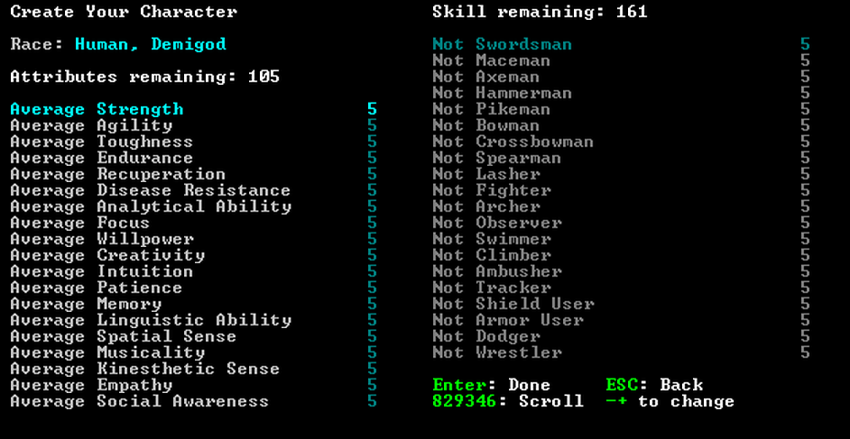
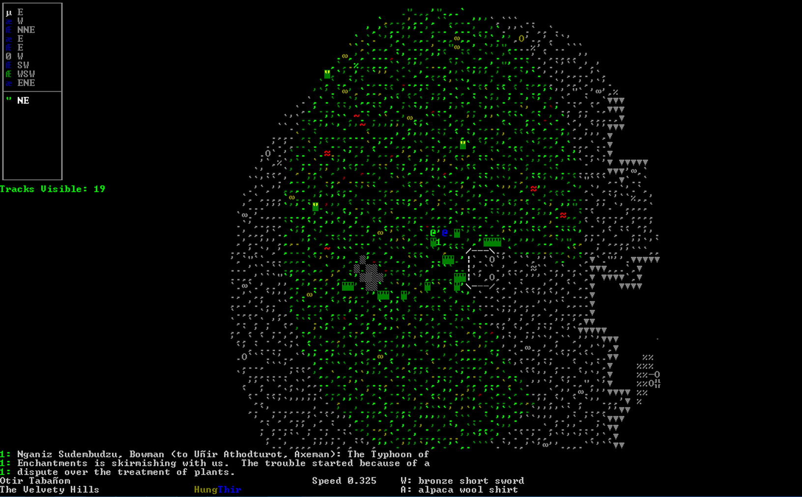
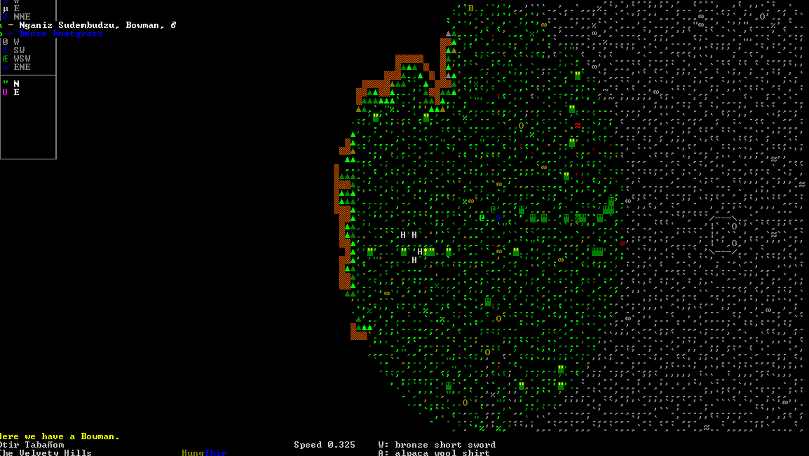
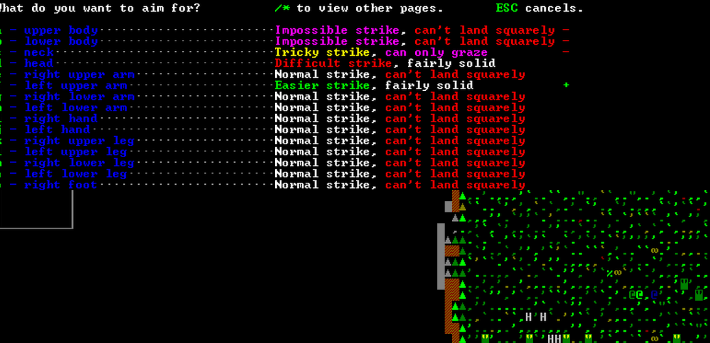

Intro aux tutoriels
 Les tutos écrits ci-dessous seront courts. Le but est de faire une série de petits articles qui traiteront chacun d'un sujet en particulier.
Les tutos écrits ci-dessous seront courts. Le but est de faire une série de petits articles qui traiteront chacun d'un sujet en particulier.
Les tutos écrits ci-dessous seront courts. Le but est de faire une série de petits articles qui traiteront chacun d'un sujet en particulier.
 Quand nous démarrons une jeu en mode aventure, nous arrivons dans la page de choix du héros.
A gauche, vous verrez toute la liste des héros disponibles. Vous n'aurez pas de nom mais juste la race du héros et sa civilisation de départ. A droite, vous verrez la zone qu'occupe la civilisation sur la carte.
Au milieu, vous verrez le "statut" du héro. Vous aurez trois choix: paysan, héro et demi-dieu.
Les joueurs expérimentés prendront comme statut paysans, pour les débutant, demi-dieu conviendra mieux.
Comme race jouable, nous avons 3 race mais 4 type de héros: les humains civilisés, les humains extérieurs,
les nains et les elfes.
Selon le héros que vous choisirez, votre équipement de départ sera différent.
Cette classe de héros commence avec n'importe quelle armes de bronze/fer/argent.
Ils ont aussi un choix plus vaste de compétence de combat.
Ils peuvent utiliser n'importe quel objet vendu chez les marchands.
Ils sont le meilleur choix pour un débutant.
Ces humains commencent seulement avec les compétence "spear user" et "knife user" d'activée. Ils ne pourront pas avoir "Armor user" et "shield user" d'activé et commencerons nu au début de l'aventure.
Les héros de cette race sont les seuls à commencer avec une arme en acier.
Ils portent des armures et vêtements adaptés à leur taille et donc ne pourront pas utiliser toutes les armures.
Ils sont les seuls héros qui sont capables d'entrer en transe martial s'ils sont environnés d'ennemis.
Ils commencent l'aventure avec des armes en bois. Ils ont beaucoup de limitation dans le choix des compétence militaire.
Ils sont très rapides.
Ils portent aussi des armures adapté à leur taille et donc ne pourront pas porter n'importe quel armure.
 Après avoir choisi votre héros, vous arriverez dans un menu avec tous les attributs de votre nain.
Vous pouvez voir dans cette nouvelle page, deux colonne. Celle de gauche représente des qualités alors que celle de droite représente des compétences.
Tout comme le mode forteresse, nous aurons des points d'attribut.
Mais contrairement à ce mode, les points des qualités sont indépendants des points de compétences.
Le nombre de points que vous pourrez attribuer au début de votre aventure dépendra du niveau du statut que vous aurez choisis.
Ainsi, les paysans auront beaucoup moins de points que les demi-dieu (raison pour laquelle les demi-dieu sont meilleurs pour les débutants).
15 points pour les qualités et 35 points de compétence pour le paysans.
35 points pour les qualités et 95 points de compétence pour le héro.
105 points pour les qualités et 161 point de compétence pour le demi-dieu.
Les qualités sont assez variées. Celles qui semblent importantes à faire monter sont les qualité: agility (agilité), toughness(endurcissement) et strenght (force). Les qualités Endurance et will power (pouvoir de volonté) sont à augmenter. La première permettra au héros de ne pas trop se fatiguer en combat alors que l'autre permettra au héros de résister plus efficacement à la douleur.
Pour les points compétences, nous avons pas mal de compétences militaires ainsi que d'autres compétences
moins utiles au combats mais utiles en d'autre situation.
Swimmer : Permet au héro d'empêcher une mort par noyade.
Ambusher : Permet au héro de se déplacer furtivement.
Observer : Permet de repérer des unités invisibles. Ca permet notamment de ne pas tomber dans des embuscades.
Thrower : Permet au héros de lancer n'importe quelle objet vers un ennemi.
Knapper : Permet au héros de tailler des pierres pour les rendres plus dangereuses.
Reader : Permet de lire des livres ou de lire des inscriptions.
Après avoir choisi les qualités et compétences, vous pourrez choisir le sexe, le nom ainsi que le background de votre personnage.
Avec la touche "e", vous pouvez entrer le nom du héro.
Avec "c", modifiez le nom (ça donne un écran de sélection complet avec tous les mots du jeu).
Avec "r", le nom sera choisi aléatoirement.
Avec "g", changez le sexe du héro.
Avec "Enter", entrez dans l'aventure.

Vous voici dans le mode aventurier mais que faire ?
Nous allons apprendre les bases pour survivre.
Appuyez sur la touche "l" pour regarder autour de vous. Avec les touches "<" et ">" vous pouvez monter ou descendre votre regard pour observer d'autre niveau.
Pour parler à quelqu'un à quelqu'un, appuyez sur "k". Soit vous aurez des conversation en cours et vous pourrez les choisir dans une liste, soit vous n'en avez pas et vous pourrez choisir avec qui vous voudrez en avoir en choisissant quelqu'un avec votre curseur.
Pour manger quelque chose, vous devez avoir des provisions dans votre sac. Soit que vous les aurez acheté, soit vous serez partis à la chasse ou à la ceuillette.
Pour boire, soit vous avez de l'eau dans votre sac, soit vous trouvez près d'une rivière ou sous la pluie (qui sont des sources illimité d'eau).
Si jamais vous êtes dans une zone froide et que vous vous retrouvez avec de la glace ou de la neige dans vos poche, vous pouvez les faire fondre sur un feu de camp.
Pour cela appuyez sur "I" prés d'un feu de camps et choisissez l'objet à faire fondre, puis choisissez la lettre équivalente à l'option réchauffer l'objet en question.
et voilà, vous aurez dans votre inventaire de l'eau toute fraîche.
Pour prendre de l'eau d'un puit, vous devez agir sur le puit en appuyant une première fois sur "u" pour mettre le seau dans le puit et une autre fois pour ramener le puit
rempli. Ensuite, appuyez sur "I" et choisissez votre gourde "Waterskin" dans la liste pour la remplir avec l'eau du puit.
Vous pouvez faire pareil pour remplir votre gourde aux rivières si celles-ci ne sont pas gelée.
Pour boire ou manger, vous n'aurez qu'à appuyez sur la touche "e" et vous sélectionnerez dans la liste ce que vous voulez manger/boire.
Pour prendre un objet et le mettre dans votre sac, vous devrez vous positionner au-dessus de l'objet en question et appuyer sur la touche "g".
Une liste de tout ce que vous pouvez prendre va s'ouvrir, vous n'aurez qu'à sélectionner ce que vous voulez prendre. (pour faire défiler la liste appuyez sur "/" ou "*")
N.B: C'est aussi avec la touche "g" que vous pourrez faire un feu de camp en choisissant le bon objet dans la liste "Make fire".
Pour recruter quelqu'un, vous devez entamer le dialogue avec lui.
Choisissez dans la liste "Ask listener to join you" puis "Ask listener to join you on adventures".
Ne vous attendez pas que beaucoup de personnes vous suivent. La plupart vous diront qu'elles ne veulent pas.
Au début de votre aventure, vous ne pourrez recruter que 3 personnes mais au fur et à mesure, vous pourrez obtenir l'aide de plus de personne.
Il vous est possible de demander à votre nain de courir ou bien de marcher sur la pointe des pied en appuyant sur la touche "S".
Une liste va s'ouvrir avec toutes les vitesses de marche possible. (il y en a 6 en tout).
A droite, vous pouvez voir toutes les conditions qui peuvent jouer un rôle pendant que vous courez ou marchez prudemment.
Appuyez ensuite sur "s" pour passer en mode furtif ("sneaking").
¨Pour validez appuyez sur "Enter"
Si vous appuyez sur "s" au lieu de "S", vous passerez en mode couché ou mode mode debout selon le mode de déplacement où vous vous trouverez.
Bien sûr, le mode couché est bien plus lent que le mode debout.
L'action de grimper à un arbre en mode aventurier n'est apparue que très récemment dans le jeu.
Première chose pour grimper aux arbres, c'est d'avoir les mains libres. Il vous faut donc ranger l'arme que vous avez dans les mains avec la touche "q".
Approchez vous ensuite du tronc d'un arbre et appuyez sur "h" pour vous agripper.
Ensuite, vous pourrez vous déplacer dans l'arbre via les touches multidirectionnelle et les options que vous choisirez dans les menu qui s'afficheront.
Pour dormir, vous devrez appuyez sur "Z".
Avec "w", vous pouvez juste attendre alors qu'avec "s" vous pouvez dormir.
Avec "+" ou "-", vous pouvez choisir la durée de votre sommeil.
Avec "d", vous pouvez choisir que cette durée va aller jusqu'à l'aube.
Attention, quand vous dormez, vous pouvez très bien être dérangé par quelque chose qui pourrait vous attaquer.
Voyagez rapidement avec la touche "T".
Vous ne voyagerez plus sur le terrain mais sur la carte.
De cette façon, vous pouvez parcourir de longue distance.
En haut, vous apercevrez une barre de couleur. Elle représentera le temps du jour en cours.
Le temps peut passer très vite en mode voyage.
Quand vous arriverez prés d'un lieu important, la carte zoomera sur le lieu en question.
Avec "m", vous afficherez la carte général du monde.
Pour sortir du mode voyage, appuyez sur "d".

Vous voici dans le mode aventurier mais que faire ?
Nous allons apprendre les bases pour survivre.
Appuyez sur la touche "l" pour regarder autour de vous. Avec les touches ">" et "<" vous pouvez monter ou descendre votre regard pour observer d'autre niveau.
Vous pouvez vous informer sur les odeurs environnantes.
En appuyant sur "o", un message s'affichera qui vous dira quelle sera l'odeur la plus forte.
Appuyez sur "O", vous permettra d'avoir tout le temps cette information d'affichée.
Avec "K", vous pouvez afficher les traces de pas des créatures/personnes environnante ce qui vous permettra d'augmenter votre compétence "Tracker".
Si vous appuyez sur "Alt+K", vous ne verrez que les traces les plus fraîche.
Avec la touche "P", vous pourrez afficher les information sur la température. Cela peut aller de "Hot" à "Freezing".
Avec "W", vous afficherez la météo environnante.
Cette information n'est pas très importante.
"D" affichera la date du jour en cours. (jour, mois et année).
Pour afficher les informations de votre héro, appuyez sur "z".
Vous atteindrais la page de votre héros ou seront affichées vos compéténces ainsi que leur niveau respectif en plus de l'état des différentes parties de votre héros.
(Si vous voyez une partie rouge c'est qu'elle aura été blessée)
Avec "s", vous afficherez les qualité du héros ainsi que leur niveau.
Avec "h", vous afficherez la santé du héro. Vous pourrez voir de quoi souffre le héros ains que ses différentes blessures.
Pour sortir de la page de santé, vous n'aurez qu'à appuyer sur "Esc".
Avec "k", vous afficherez la liste des personnes/créatures/animaux que vous aurez tué ainsi que le lieux où ce meurtre a eu lieu.
Avec "d", vous afficherez une description de votre héros.
Avec "c", vous pourrez afficher tous vos compagnons. Pour en choisir un parmi la liste, appuyez sur la touche correspondante.
Vous arriverez sur la page du compagnon qui affiche l'équipement du personnage ainsi que les différentes parties de son corps (comme votre héros).
Avec "d", vous afficherez une description du personnage.
 Pour combattre un ennemi, vous devez vous trouver assez proche de lui pour lui porter un coup.
Une fois très prés de votre ennemi, appuyez sur "A".
Vous aurez le choix entre porter un coup ("strike"), lutter ("wrestle") et éviter un coup ("dodge").
Des fois, les option "block" et "pary" pourront s'ajouter si votre ennemi vous attaque.
Si vous choisissez de porter un coup, une nouvelle page s'ouvrira montrant les partie du corp de votre ennemi que vous voulez attaquer.
Pour chacune des parties du corp, vous pourrez obtenir deux informations.
La première c'est la facilité avec laquelle votre coup sera porté. Cela ira de easier à quite connect.
La seconde sera la stabilité de votre position pendant l'attaque ou après l'attaque.
Une fois la partie du corp choisie, vous pouvez choisir avec quoi vous voulez l'attaquer et le style de l'attaque.
Vous pouvez l'attaquer avec votre arme, donner un coup avec votre bouclier, la tabasser avec vos poing, lui donner des coup de pied (action plus lente que les autres), la griffer, la mordre.
Vous pouvez choisir de faire une attaque normale, rapide(plus rapide), puissante (plus lente), sauvage (plus rapide) ou précise (vraiment très lente)
Si vous choisissez de lutter, vous pourrez choisir avec quelle partie de votre corps ou quelle arme vous voudrez saisir l'ennemi.
Ensuite, vous devrez choisir quelle partie de votre ennemi saisir.
De cette façon-là, vous pourrez vous saisir de votre opposant.
Avec "dodge", vous pouvez éviter un coup. Vous devez choisir vers quelle zone éviter.